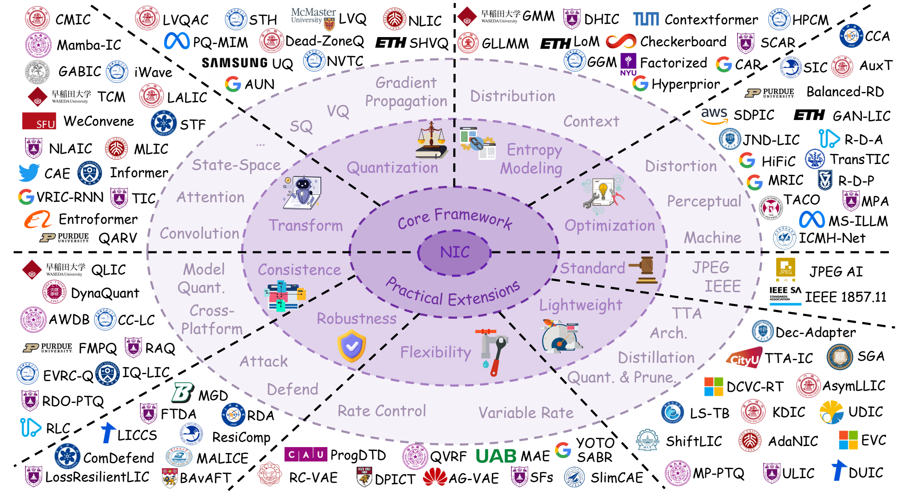
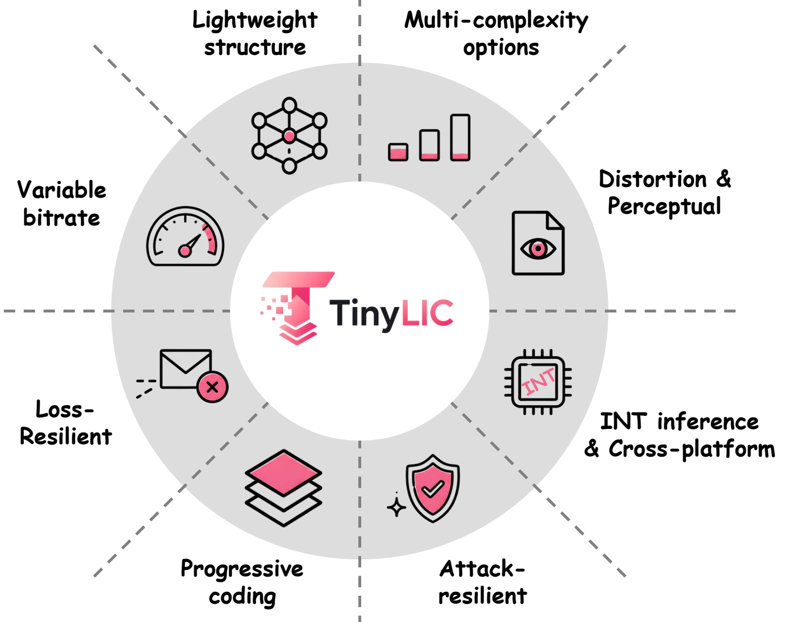

A review of foundations, evolution, deployment, and outlook for neural image compression, paired with TinyLIC: an open lightweight neural image codec for practical system-level evaluation.

Review taxonomy: core coding components and practical extensions.
The survey follows learned image coding from VAE-based foundations to practical deployment issues that decide whether a neural codec can become a reliable compression system.
Nonlinear transforms, quantization, entropy models, and rate-distortion optimization.
Variable rate, cross-platform consistency, model robustness, lightweight deployment, and standardization.
A reproducible reference codec for rate-distortion-complexity and system trade-off studies.
TinyLIC is designed as a transparent, efficient, and extensible reference codec rather than a large model chasing only the strongest R-D curve.

TinyLIC benchmark overview: model budgets, baseline modes, practical mechanisms, and optimization goals.
TinyLIC is evaluated on Kodak, CLIC, Tecnick, and JPEG AI test images. Lower BD-rate is better; VTM 22.0 is the distortion-oriented anchor.
| Variant | Dec. KMACs/pixel | Params | Kodak | CLIC | Tecnick |
|---|---|---|---|---|---|
| Nano | 9.99 | 3.16M | 14.78 | 14.68 | 12.76 |
| Small | 19.99 | 4.76M | 5.43 | 4.63 | 2.73 |
| Base | 50.76 | 10.57M | -0.79 | -1.76 | -4.21 |